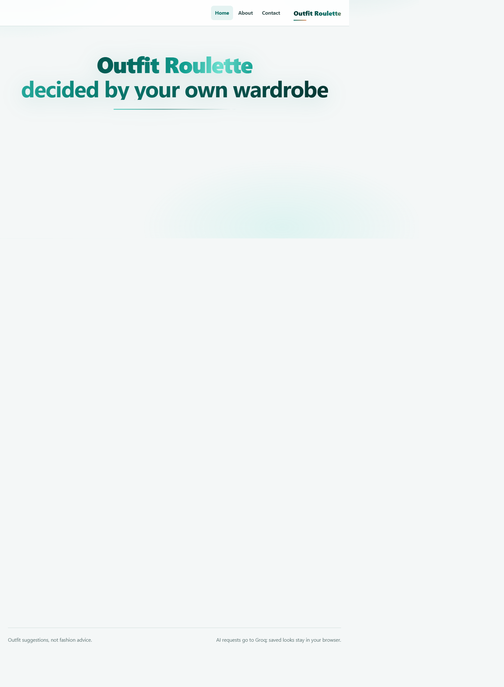
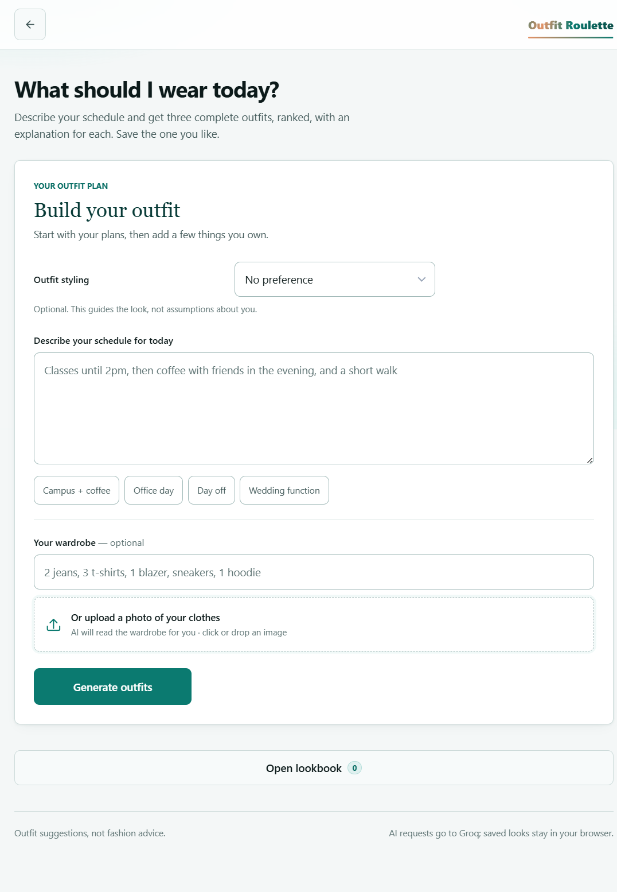

DevOps mini project · 2026
Outfits for your day.
From your closet.
A schedule-aware styling assistant built with a secure Node.js proxy, automated CI, Docker, and an observable service stack.
01 · Product
Getting dressed is a daily decision.
People have plans, weather, personal style and an existing wardrobe. The app turns those constraints into three ranked looks instead of inventing a shopping list.

02 · User flow
A personal brief, then a useful answer.
Choose a styling direction, describe the day, optionally list clothes or scan a photo, then save a look worth wearing again.

03 · Architecture
Small stack. Clear boundaries.
The browser stores saved looks. The Node server keeps the Groq key private and proxies only approved model requests. Docker packages the same server for CI and hosting.
localStorage + IndexedDB
Qwen wardrobe-photo scan
non-root user + health check
04 · CI and container
Every push gets checked.
GitHub Actions checks syntax, runs API integration tests with a mocked Groq upstream, builds the image, starts a container, and checks both health and homepage HTTP responses.
View passing CI + Docker smoke run →05 · Monitoring
Watch the service, not just the page.
Compose provisions Prometheus and Grafana locally. The dashboard tracks request rate, p95 latency, 5xx rate, AI configuration and Node.js RSS memory.
Status: Configuration and dashboard are in the repo; runtime dashboard still needs Docker Desktop to be launched.
06 · Deployment
Ready to deploy. Secrets stay private.
Render Blueprint config and a GitHub deploy-hook job are included. After creating the Render service and setting a freshly rotated Groq key, add the deploy hook as a GitHub Actions secret.
07 · Wrap-up